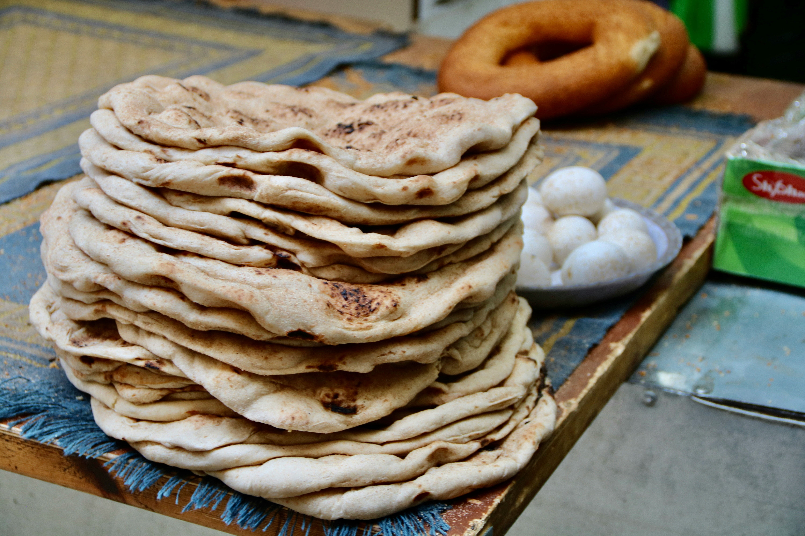

Cheese & Feta Stuffed Pita:
These mouth-watering, super cheesy feta & cheese stuffed pita’s are super easy to make, and make a delicious starter to any meal! Pita Breads are a Greek flatbread, originally made in 1983 BCE. Dating back around 4000 years, pita has stayed a national dish ever since!
Recipe:
Here is everything you will need to make these mouth-watering Cheese Stuffed Pita’s:
- Makes: 8
- Cook Time: 5 Minutes Each (Roughly)
- Prep Time: 2 Hours 45 Minutes
- Total Time: 3 Hours 5 Minutes
Pita Bread Dough:
- 3 Cups Bread Flour
- 3/4 Cup Warm Water (Not Hot)
- 6 Tbsp Warm Milk (Not Hot)
- 1 ½ Tsp Sugar
- 1 ½ Tsp Yeast
- 3 Tbsp Olive Oil
- 1 ½ Tsp Salt
Cheese & Feta Filling:
- 2 Cups Shredded Mozzarella Cheese
- 2/3 Cups Feta Cheese (Crumbled)
- 1 Tsp Garlic Powder
Method:
- In a medium bowl, add in the warm water and warm milk. Temp should be warm to the touch, not hot.
- Using a whisk, mix in the sugar, then the yeast. Let it sit for 5 minutes or until the yeast becomes frothy.
- After the 5 minutes, whisk in the Olive Oil and Salt.
- Using a wooden spoon, or a stand mixer, mix in the flour until a shaggy dough forms. Transfer to a floured bench and kneed for 10 minutes. Or keep mixing in the stand mixer until a smooth and Elastic dough forms. Shouldn’t take any longer then 10 minutes.
- Once the dough is Smooth and Elastic, transfer to a well-oiled bowl and let it rest in a warm space in your house for about 1 ½ hours, or until the dough has doubled in size.
- After the dough has risen, transfer the dough back to a floured surface and form the dough into a circle. Then divide the dough into 8 equal parts. If the dough is still sticky, wet your hands or add some more flour. However, the dough needs to stay sticky so it sticks to itself later on.
- Mix together the Shredded Mozzarella, crumbled Feta and the Garlic Power. Make sure it’s combined evenly.
- Using your hands, flatten all of the pita bread balls into flat, ½ cm thick rounds.
- Divide the Cheese Filling into 8 parts, and put the filling into the centre of the dough rounds.
- Form the dough around the filling, making sure it’s all evenly covered. Make sure all the cheese is sealed inside the dough, pinch the centre together to ensure a proper seal. Repeat 7 more times until all the pita bread balls are made.
- Cover all 8 dough balls with a tea towel and let them rise for another hour.
- After the hour, get the dough balls on a floured surface and flatten them out using a rolling pin or your hands. Make sure the filling stays inside and the dough is perfectly sealing the filling inside. Once all dough balls are flattened into round 5inch wide circles, they are ready to be cooked.
- Get a heavy-bottomed pan and heat it up. Once hot, place your pita breads on the pan, making sure not to crowd them, 2 at a time is perfect. After around 1 minute, flip the Pita over and put around 1 tsp of olive oil on the cooked side. Let the Pita cook for 1 minute on the other side. Continue to flip and cook until the dough gets becomes a nice golden-brown colour. If filling starts bubbling out of the side, that’s a good indicator that its done.
- Continue to cook them all this way until all 8 are cooked. Serve Immediately for best results.

Helpful Tips:
- When stuffing the dough, try not to flour the surface, as it makes sealing the dough ball much easier, and doesn’t leave any gaps, resulting in it not cooking properly.
- Make sure you leave your dough to rise in a warm space. Yeast is activated with warm, so ensuring the dough is in a warm space will help it rise.
- If you’re cooking the Pitas and the filling begins to bubble and come out of one of the sides, that’s a good indicator that the pita is done.
- Food still cooks even if it’s not on direct heat. The heat remains inside the food and continues to cook it. So sometimes it’s good to removes your food from the heat just before its done, that way you don’t overcook it.